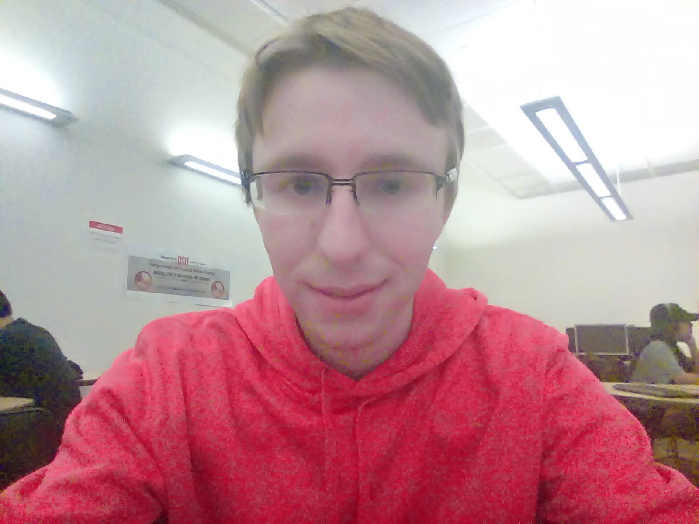

Me: Markus Woltjer
This bulleted list should suffice to briefly introduce myself.
- My name is Markus Woltjer and I go by Markus.
- My major is technically electrical engineering but that's just so I can take pro school while not having yet completed this course, but really I'm just taking computer science, and this is my fourth year.
- I'm probably about a 2. I know C pretty well but I'm focused on the math side of CS so the few things I've done with HTML, CSS, and JS have been skimpy.
- I'd like to know how to make websites because I'm interested in engineering management and startups, and it seems a very useful skill especially for those interests.
- Yup, I've used Piazza for a couple years now, and I just added myself to this course. I can't say I'm a fan but I think that's more on my end. The layout isn't intuitive for me but I think it works pretty well for its purpose. My main hesitation is that with a class this size, there's just going to be a flood of posts and trying to find the things relevant to the issues I am having will be a little slow and tedious.
- My life is never static. I make friends with all sorts of people and engage in their interests. I have some characteristics from every social group and feel at home, but not for long. Two years ago my group was Persian ECE grad students. Now I'm heavily involved with animal rights movements in Corvallis and Portland. It seems this type of thing might make a long term desk job not an option. If I have a feeling my life is comfortable, but not really adventerous, I get up and go. The one career that seems like it might engage me enough to stay is futurism research at Autodesk. I'm also a world class Hearthstone player, because part of being erratic means being 21 but blowing time on a children's card game ;) but it's okay because I know PhD students here who do the same.
- 